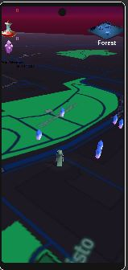
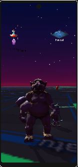
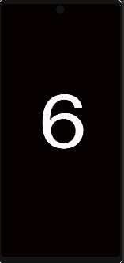
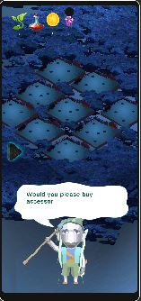
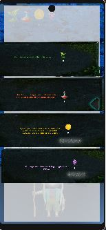

Story Of Lights
About the game





Story of lights is a game project that was developed in collaboration with Next Skövde to promote the tourist destination 'Billingen' which is located close to Skövde. The main goal of this project was to encourage people to visit Billingen and engage in physical activities while enjoying the beautiful surrounding. In this location based game, the players get to collect gems and elixirs in order to plant light trees to save the forest which is slowly falling into darkness while avoiding being captured by enemy trolls. Currently the game only has a prototype version and we are hoping to fully develop this project and release it as a full game.
Responsibilities
- Creating the world scene using mapbox
- Handling gem and elixir initiation
- Handling enemy encounters